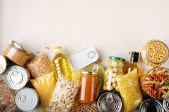
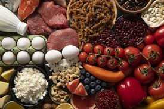
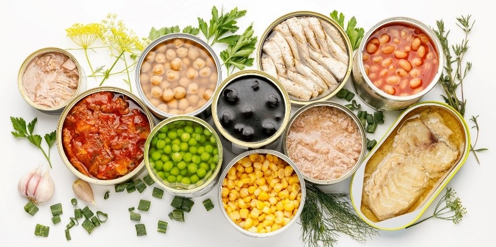

CONHECENDO OS ALIMENTOS:DO NATURAL AOS INDUSTRIALIZADOS



Alimentos processados são alimentos que passaram por alguma mudança feita pela indústria para durar mais ou ficar mais saborosos. Geralmente, recebem ingredientes como sal, açúcar ou óleo. Eles vêm de alimentos naturais, mas foram modificados. Exemplos são queijo, pão, milho em conserva e frutas em calda. Quando consumidos com equilíbrio, podem fazer parte da alimentação, mas é importante dar preferência aos alimentos in natura.
Nos alimentos processados, podem ser adicionados ingredientes como: • sal • açúcar • óleo • gordura • conservantes • corantes • aromatizantes A diferença é que os alimentos in natura vêm direto da natureza e quase não passam por mudanças, como frutas, verduras e ovos. Já os alimentos processados passam por modificações na indústria e recebem ingredientes como sal, açúcar ou óleo, como pão, queijo e alimentos em conserva